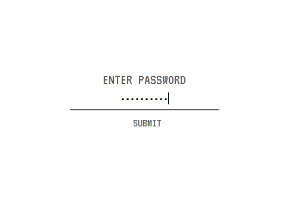

So schnell sieht man sich also wieder. Hast du tatsächlich zwischen den Zeilen gelesen oder hast du einfach nur verzweifelt auf Hilfe geklickt? Naja, jetzt bist du hier. Leider ist niemand gekommen um dir zu helfen. Es sind nur du und ich hier.
Eins wollen wir mal klar stellen. Ich bin nicht hier um dir zu helfen. Eher das Gegenteil. Solltest du wirklich mal Hilfe brauchen, weißt du an wen du dich wenden solltest.
Aber jetzt wo du schon mal hier bist, kann ich dir das ein oder andere erklären.
Dieses Eingabefeld sollte dir bekannt vorkommen. Du wirst es noch oft brauchen. Oben in der Leiste kommst du mit einem Klick auf 'PASSWORT EINGABE' zu genau diesem Feld. Um bei diesem Spiel weiter zu kommen, musst du das neue Passwort herausfinden und auf der Seite eingeben. So kommst du von einem Level in das nächste.
Probiere es mal mit echterstart. Es wird nicht immer so leicht sein. Manchmal musst du über den Tellerrand hinausschauen, um an das nächste Passwort zu gelangen und wer weiß, ob es überhaupt immer ein Passwort geben wird.
Ich schätze wir sehen uns wieder, wenn du das nächste mal angekrochen kommst und um Hilfe bettelst. Hehehehehehe.